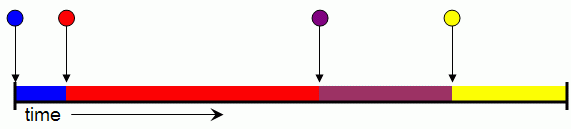

This document describes the structure and syntax of various file types used by ParticleVis. Each file type represents a specific class of data, and some file types may be dependent on others for context. The file format of XML geometry descriptors is not described here, but it is covered in detail an accompanying document.
The particle state file is the primary source of data for ParticleVis. Within this file all fundamental information from the particle simulation is present. The state file enumerates position, orientation, and velocities for each particle at each a series of timesteps. The file format is either ASCII plaintext or gzip-compressed ASCII plaintext.
Within the state file there are a number of blocks of numerical data corresponding to each frame of data to be loaded. Each block is a series of lines of floating point values separated by whitespace. The strings used to represent the floating point values obey common C syntax: a combination of a plus or minus sign, numerals, an optional decimal point, and an optional exponent (preceded by “e” or “E”). All whitespace, including tabs, spaces, and blank lines, is ignored. A token denotes a single block of characters that is delimited by whitespace. The basic unit of data is a single line, which is a set of tokens terminated by a newline.
The general layout of the state file is illustrated in Figure 1. Each line of state contains 13 floating point tokens, unless Euler angles are used (in which case there are only 12). Statements in brackets are comments.
Each frame of the simulation is labeled by a timestamp t, followed by a sequence of lines that correspond implicitly to the particles of the simulation. Each of these lines contains the position of the particle (x y z), a quaternion describing the orientation of the particle (q0 q1 q2 q3), the translational velocity vector (dx dy dz), and the angular velocity vector (dη dξ dλ).
The position and translational velocity are both given in world coordinates. The angular velocity vector is given in the local coordinates of the particle. The quaternion is used to orient the particle, and encodes a rotation that transforms the local object coordinates into world coordinates. At load time, each line of 13 tokens is parsed into floating point values and stored in an internal data structure for use in visualization.
The state file may also employ Euler angles for orientation information, instead of quaternions. In this case the particle orientation is represented by 3 Euler angles, given in radians, that establish the local object axes (a series of axial rotations in order X, Y, Z). When using Euler angles, each line of state contains only 12 tokens.
| x y z | η ξ λ | dx dy dz | dη dξ dλ | [for each particle] |
Based on the number of tokens per line, ParticleVis will choose the appropriate (Euler or quaternion) parser automatically.
Since conversions between decimal statefiles in ASCII format and binary floating point are expensive, a native binary format that holds state information directly in binary floating point form is available. This format uses single precision IEEE floating point values, and compared to ASCII statefiles is much more efficient in terms of precision (relative to file size) and loading speed.
|
Each binary state file begins with a 4-byte header whose value is “DEM” and a single trailing space (if interpreted as ASCII), followed by a 4-byte unsigned integer that indicates the particle count. After these 8 bytes, a series of 4-byte (single precision) floating point values comprise the remainder of the file. These values are issued one after another, packed together without delimiters.
The layout of the binary state file is similar to the ASCII state file: each frame block contains a floating point timestamp and a set of particle states for that frame. Unlike the ASCII state file, the state information in each block is organized into contiguous arrays, so that all positions, orientations, and velocities, are given in four large blocks, one after another. Quaternions are always used for specifying orientation. Each array contains either three (position, velocities) or four (quaternions) floating point values for every particle. Including the timestamp, each block will therefore contain 4 + 52n bytes, where n is the particle count. Any number of frames present in the binary file will be sequentially read in by ParticleVis. The layout of the file is outlined in figure 2.
The vector file contains a set of frames that each describe a field of scattered vectors. The layout of frames in a vector file is similar to the layout in a state file. Unlike the state file, however, the length of each block is variable, and each line describes a single three-dimensional vector at a point (6 floating point values per line). Figure 3 portrays the layout of the vector file: each block can have an arbitrary number of sampled vectors.
| |||||||||||||||||||||||||||||||||||||||||||||
Each line in the vector file is interpreted as a point, x y z, and a three-dimensional vector relative to that point, dx dy dz . The point is considered to be the sampling point, and the vector quantity is attached to that point in world space. Once loaded, the rendered lengths of the glyphs that represent the vector field can be adjusted, and colors can be mapped to the magnitude of the vectors.
The color map file format allows the specification of a color for each particle at each frame in a loaded state file. This color is given in red, green, and blue intensities. The color map is composed entirely of integer values: each line assigns a color to a single particle at a particular frame. The line format contains 5 integers, for particle ID, frame ID, and RGB color. The first three lines of a color map follow.
| particle | frame | r0 | g0 | b0 |
| particle | frame | r1 | g1 | b1 |
| particle | frame | r2 | g2 | b2 |
| ... | ||||
Any number of these lines can be specified in a color map file. Each line gives a particle p, and a frame f, which are both integer IDs that correspond to the implicit order of particles and frames in the loaded state file, starting at zero. Any arrangement of the particle IDs is valid. The r g b values are integers ranging from zero to 255 that describe the color to be mapped. Zero corresponds to no intensity and 255 corresponds to maximum intensity for that color channel.
|

|
At load time the user is able to select a “persistent” or “non-persistent” loading style for color maps. Persistent mapping will retain the mapped color of the particle until it is changed again, as is shown in Figure 4. When persistence is enabled the specifed frame numbers must be nondecreasing. Non-persistent mapping will only specify a color for the given frame, and the particle will revert to a white color in the next frame.
The surface map file format enables a scalar value to be specified across the surface of each loaded spherical particle. Surface maps are loaded through an XML descriptor with an embedded filename and map resolution (a resolution of ten by ten is standard).
Each particle has a set of mapping locations, totalling the square of the resolution, distinguished by an ID number. These “panel numbers” and their corresponding map points are obtained by a simple iteration over spherical coordinates, as demonstrated by the pseduocode in Figure 5. In this iteration, theta varies faster than phi, and each point defines the upper left corner of a spherical “panel” region. The actual mapping point is in the center of each of these panel regions (note the offset values in Figure 5).
|
The surface map file is laid out in blocks, just like the state file and vector file. Each block contains a list of lines, each of which defines a single mapping point on some particle and panel. The first two entries are integer IDs: the particle ID, corresponding to the ordering of particles in the loaded state file, and the panel ID, corresponding to the spherical order discussed previously. Both IDs start from zero. The panel value is a floating point number that will be attached that panel. Figure 6 demonstrates the file layout.
| |||||||||||||||||||||||||||||||||||||||
The panel values are persistent: once values are loaded onto a particle and panel, they will remain until another is specified. The mapping from surface values to coloring can be adjusted once the surface map has been loaded. A horizontally oriented texture map is used to provide the gradient of color for the coloring process.
The volume file format enables a “raw” binary file of volumetric data to be loaded. The format of this file is modeled after Paul Bourke’s VOL file format. A plaintext header describing the file is given in the first five lines of the file, and the remaining data is interpreted as an array of scalars (in one of many formats) that describes an intensity value across a block of space.
The header, shown in Figure 7, is human readable, and can be written in by hand to adapt many common raw volume file formats for use with ParticleVis. The header contains a comment line, an integer grid length for each dimension, a cell size in world coordinates, the position (in world coordinates) of the lower corner of the volume grid, and a datatype flag. The datatype flag describes how to interpret the actual bytes in the grid, and the byte ordering of these values. Supported values are “16,” which indicates a 2-byte unsigned integer, “32,” which indicates a 4-byte unsigned integer, and “-32,” which indicates a 4-byte floating point value. The second token on the datatype flag is either “0” for big endian (e.g., Motorola processors), and “1” for little endian (e.g., Intel processors). An example header is shown in Figure 8.
|
|
The remainder of the file is a sequences of byte values of the type described in the header. The layout of bytes is that of an array that varies most quickly along the X dimension, then Y, and then Z. The total number of values read will equal lx ×ly ×lz. Once the volume file is loaded, the size and shape of the cells and the grid location can be adjusted in ParticleVis. The mapping between the scalar values in the volumetric grid and color (and opacity) can also be defined.
A handful of other file formats are also used by ParticleVis for both input and output. The “load texture map” command allows the loading a 24-bit bitmap file of arbitrary size for use in texture mapping. Any device independent bitmap with a color depth of 24 bits will suffice. The size of the bitmap is limited only by the available graphics memory. Texture filtering may be superior when the texture dimensions are a power of two.
Image output is provided through use of the PNG and AVI files. During image output a series of PNG (portable network graphics) files can be generated. Alternately, a Windows AVI (audio-video interleave) container file can be created and filled with outgoing frames. Selection of an appropriate codec for compressing the AVI file can be done from within ParticleVis.
Two other minor file types can be loaded by ParticleVis: graph files and gradient files. The “create graph from file” command allows a plaintext file containing X-Y points to be loaded into a subwindow. The first four lines of this file specify the axes labels and scales, and the remainder specfies a set of X-Y points. All tokens should be separated by whitespace or line breaks. The header values that are parsed are, in order, X axis label, Y axis label, minimum X value, minimum Y value, maximum X value, maximum Y value, X grid size, and Y grid size. After these values, a series of X-Y pairs are read in to create a line plot on the graph. Each new point corresponds to another frame of loaded state during playback.
RGB Gradient files are used to save and load gradient maps. A number of RGB knots can be specfied in these plaintext files. The first token read is interpreted as an integer that gives the number of knots in the file. Each knot value is composed of four tokens: an index (a real value from zero to one), and red, green, and blue intensities (also reals, from zero to one). Whitespace serves as a delimiter, and no newlines are present. Gradient files can be loaded from within the gradient editor dialog in ParticleVis.